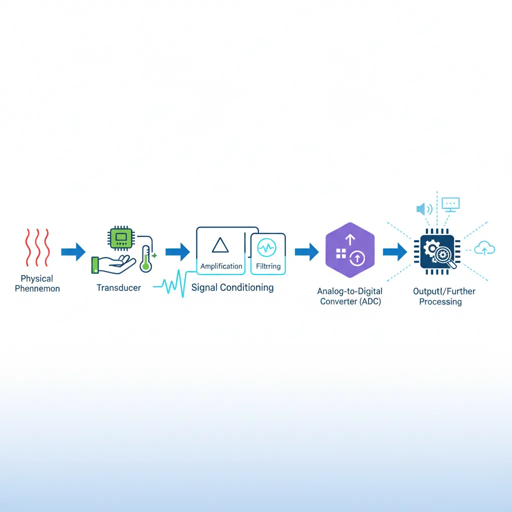
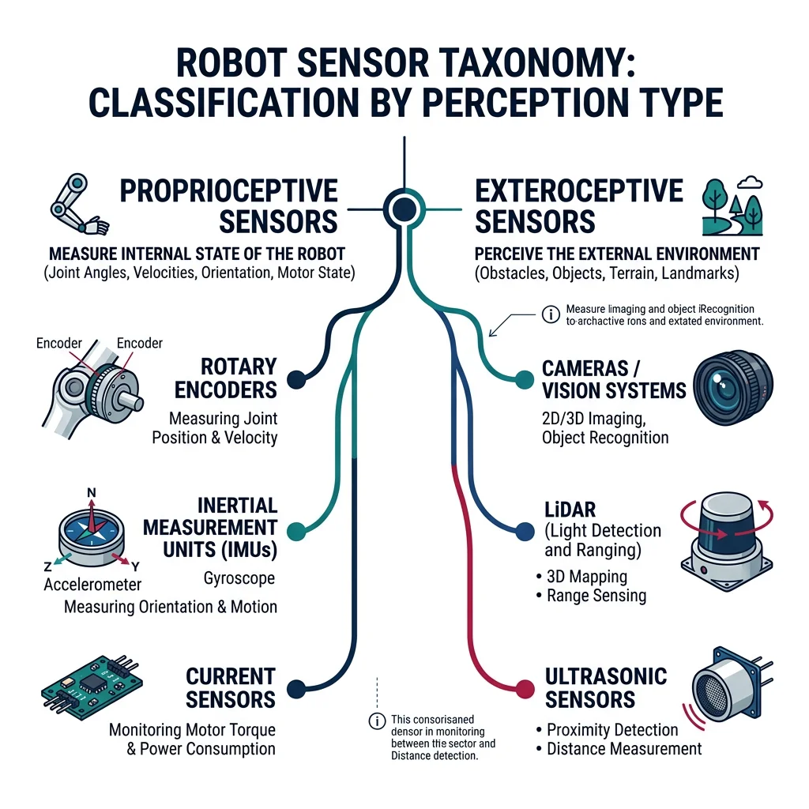
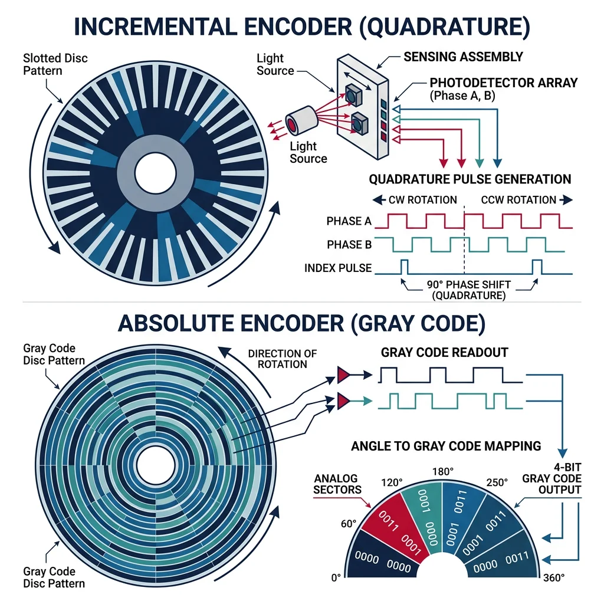
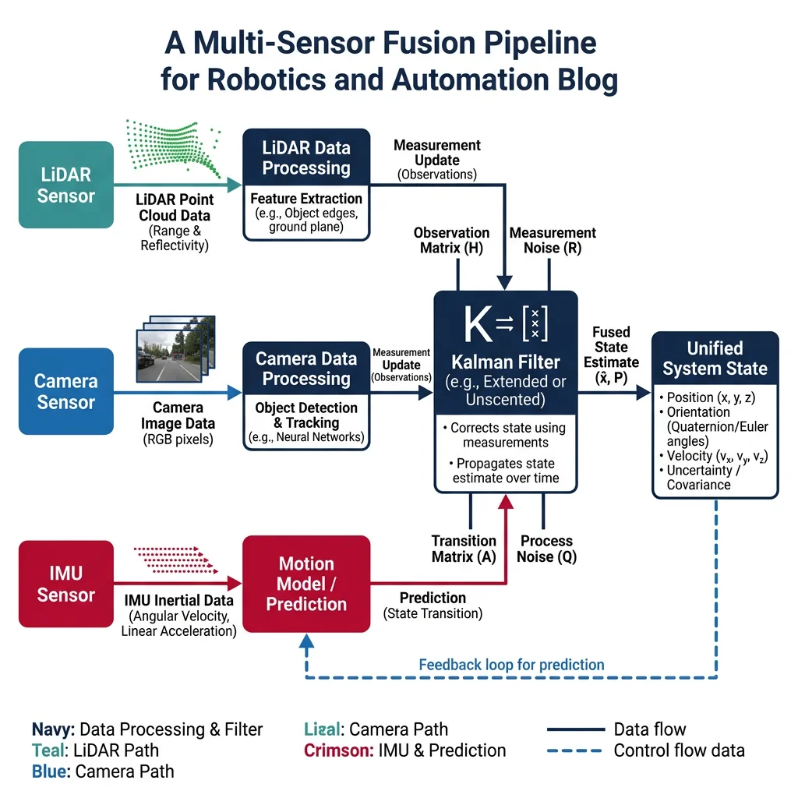
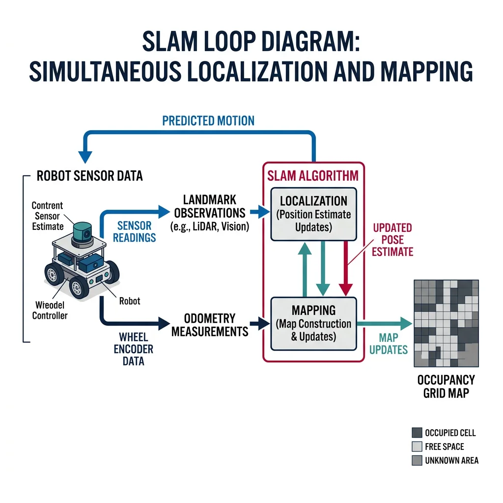

Sensor Fundamentals
Robotics & Automation Mastery
Introduction to Robotics
History, types, DOF, architectures, mechatronics, ethicsSensors & Perception Systems
Encoders, IMUs, LiDAR, cameras, sensor fusion, Kalman filters, SLAMActuators & Motion Control
DC/servo/stepper motors, hydraulics, drivers, gear systemsKinematics (Forward & Inverse)
DH parameters, transformations, Jacobians, workspace analysisDynamics & Robot Modeling
Newton-Euler, Lagrangian, inertia, friction, contact modelingControl Systems & PID
PID tuning, state-space, LQR, MPC, adaptive & robust controlEmbedded Systems & Microcontrollers
Arduino, STM32, RTOS, PWM, serial protocols, FPGARobot Operating Systems (ROS)
ROS2, nodes, topics, Gazebo, URDF, navigation stacksComputer Vision for Robotics
Calibration, stereo vision, object recognition, visual SLAMAI Integration & Autonomous Systems
ML, reinforcement learning, path planning, swarm roboticsHuman-Robot Interaction (HRI)
Cobots, gesture/voice control, safety standards, social roboticsIndustrial Robotics & Automation
PLC, SCADA, Industry 4.0, smart factories, digital twinsMobile Robotics
Wheeled/legged robots, autonomous vehicles, drones, marine roboticsSafety, Reliability & Compliance
Functional safety, redundancy, ISO standards, cybersecurityAdvanced & Emerging Robotics
Soft robotics, bio-inspired, surgical, space, nano-roboticsSystems Integration & Deployment
HW/SW co-design, testing, field deployment, lifecycleRobotics Business & Strategy
Startups, product-market fit, manufacturing, go-to-marketComplete Robotics System Project
Autonomous rover, pick-and-place arm, delivery robot, swarm simSensors are the nervous system of every robot. Without sensors a robot is blind, deaf, and numb — it cannot perceive obstacles, track its own joints, or respond to the world. Understanding sensor technology is the essential second step after grasping robot anatomy.
Every sensor works by converting a physical phenomenon (light, sound, force, temperature, magnetic field) into an electrical signal that a controller can read. The key performance metrics are:

| Metric | Definition | Example |
|---|---|---|
| Range | Min/max values the sensor can measure | Ultrasonic: 2 cm – 4 m |
| Resolution | Smallest change the sensor can detect | 12-bit encoder: 4096 counts/revolution |
| Accuracy | How close readings are to the true value | LiDAR: ±2 cm at 100 m |
| Precision / Repeatability | How consistent repeated readings are | Encoder: ±1 count |
| Bandwidth / Sample Rate | How fast the sensor can provide readings | IMU: 1000 Hz, LiDAR: 10-20 Hz |
| Latency | Delay between physical event and reading | Camera: 30-100 ms processing |
Analog vs Digital Sensors
Sensors produce either analog or digital output signals:
- Analog sensors output a continuous voltage proportional to the measured quantity (e.g., a potentiometer outputs 0–5V corresponding to 0°–270° rotation). Requires an ADC (analog-to-digital converter) for digital processing.
- Digital sensors output discrete signals — either binary pulses (encoders) or serial data packets (I²C/SPI). Can connect directly to microcontrollers.
# Simulating analog-to-digital conversion
import numpy as np
def simulate_adc(voltage, v_ref=5.0, bits=10):
"""
Simulate an ADC converting analog voltage to a digital value.
Parameters
----------
voltage : float
Input analog voltage (0 to v_ref)
v_ref : float
Reference voltage of the ADC
bits : int
ADC resolution in bits
Returns
-------
dict with digital value, reconstructed voltage, and quantization error
"""
max_digital = 2**bits - 1
digital_value = int(np.clip(voltage / v_ref * max_digital, 0, max_digital))
reconstructed = digital_value * v_ref / max_digital
quant_error = abs(voltage - reconstructed)
return {
"input_voltage": voltage,
"digital_value": digital_value,
"max_digital": max_digital,
"reconstructed_voltage": round(reconstructed, 6),
"quantization_error_mV": round(quant_error * 1000, 3),
"resolution_mV": round(v_ref / max_digital * 1000, 3)
}
# Compare 8-bit vs 12-bit ADC
print("=== ADC Resolution Comparison ===\n")
test_voltage = 3.3
for bits in [8, 10, 12, 16]:
result = simulate_adc(test_voltage, bits=bits)
print(f"{bits}-bit ADC:")
print(f" Digital value: {result['digital_value']} / {result['max_digital']}")
print(f" Reconstructed: {result['reconstructed_voltage']} V")
print(f" Quant. error: {result['quantization_error_mV']} mV")
print(f" Resolution: {result['resolution_mV']} mV per step\n")
Proprioceptive vs Exteroceptive Sensors
Sensors in robotics are classified into two fundamental categories based on what they measure:

| Category | What It Measures | Examples | Human Analogy |
|---|---|---|---|
| Proprioceptive | Robot's own internal state (joint positions, velocities, forces) | Encoders, IMUs, motor current sensors, strain gauges | Your sense of body position (proprioception) — knowing where your hand is without looking |
| Exteroceptive | External environment (obstacles, objects, terrain) | Cameras, LiDAR, ultrasonic, RADAR, GPS | Your five senses — seeing, hearing, touching the world around you |
There is also a third category sometimes mentioned:
- Active sensors emit energy and measure the return (LiDAR emits laser pulses, ultrasonic emits sound waves)
- Passive sensors only receive energy from the environment (cameras capture ambient light, microphones capture ambient sound)
Common Sensors in Robotics
Encoders, IMUs & Gyroscopes
Encoders are the most fundamental proprioceptive sensor — they measure the rotation of a motor shaft or joint. There are two main types:

| Encoder Type | How It Works | Output | Pros | Cons |
|---|---|---|---|---|
| Incremental | Slotted disc + photodetector generates pulses as shaft rotates | A/B quadrature pulses (direction + count) | Simple, cheap, high-speed capable | Loses position on power loss; needs homing |
| Absolute | Coded disc with unique binary pattern for each position | Digital code (Gray or binary) | Knows position at power-on; no homing needed | More expensive, complex interface |
# Simulating a quadrature encoder with direction detection
import numpy as np
class QuadratureEncoder:
"""Simulate a quadrature encoder with A/B channel signals."""
def __init__(self, counts_per_rev=1024):
self.counts_per_rev = counts_per_rev
self.position = 0 # Current count
self.prev_a = 0
self.prev_b = 0
self.direction = 0 # +1 = CW, -1 = CCW
def generate_signals(self, angle_deg):
"""Generate A and B quadrature signals for a given angle."""
angle_per_count = 360.0 / (self.counts_per_rev * 4) # 4x decoding
count = int(angle_deg / angle_per_count) % 4
# Quadrature pattern: (A, B) = (0,0), (1,0), (1,1), (0,1) for CW
patterns = [(0, 0), (1, 0), (1, 1), (0, 1)]
return patterns[count]
def decode(self, a, b):
"""Decode A/B signals to determine direction and update position."""
# State transition table for quadrature decoding
state = (self.prev_a, self.prev_b, a, b)
cw_transitions = [(0,0,1,0), (1,0,1,1), (1,1,0,1), (0,1,0,0)]
ccw_transitions = [(0,0,0,1), (0,1,1,1), (1,1,1,0), (1,0,0,0)]
if state in cw_transitions:
self.position += 1
self.direction = 1
elif state in ccw_transitions:
self.position -= 1
self.direction = -1
self.prev_a = a
self.prev_b = b
return self.position
def get_angle(self):
"""Convert encoder counts to angle in degrees."""
return (self.position / self.counts_per_rev) * 360.0
# Simulate encoder reading a rotating shaft
encoder = QuadratureEncoder(counts_per_rev=1024)
# Simulate CW rotation: step through quadrature states
print("=== Quadrature Encoder Simulation ===\n")
print(f"Resolution: {encoder.counts_per_rev} counts/rev")
print(f"Angular resolution: {360.0/encoder.counts_per_rev:.4f} degrees/count\n")
patterns_cw = [(1,0), (1,1), (0,1), (0,0)] * 5 # 5 full cycles = 5 counts
for i, (a, b) in enumerate(patterns_cw):
pos = encoder.decode(a, b)
angle = encoder.get_angle()
dir_str = "CW" if encoder.direction == 1 else "CCW" if encoder.direction == -1 else "--"
print(f"Step {i+1:2d}: A={a} B={b} → Count={pos:4d} Angle={angle:8.3f}° Dir={dir_str}")
print(f"\nFinal position: {encoder.position} counts = {encoder.get_angle():.3f}°")
Inertial Measurement Units (IMUs) combine multiple inertial sensors in one package:
- 3-axis accelerometer — measures linear acceleration (including gravity). Uses MEMS structures.
- 3-axis gyroscope — measures angular velocity (rotation rate). Suffers from drift over time.
- 3-axis magnetometer (9-DOF only) — measures magnetic field direction (compass heading). Sensitive to nearby magnetic interference.
Case Study: The MPU-6050 — The $2 Sensor That Changed Robotics
The InvenSense MPU-6050 is a 6-axis IMU (accelerometer + gyroscope) that costs under $2 and is found in billions of devices — from smartphones to drones to balancing robots.
Key Specs: 16-bit ADC, ±2/4/8/16g accelerometer range, ±250/500/1000/2000°/s gyroscope range, 400 kHz I²C interface, onboard Digital Motion Processor (DMP).
Why It Matters: Before MEMS IMUs, inertial navigation required mechanical gyroscopes costing $10,000+. The MPU-6050 democratized inertial sensing — any hobbyist could build a self-balancing robot or quadcopter for under $50.
Limitation: Gyroscope drift accumulates over time. At room temperature, a typical MEMS gyro drifts 1–10°/hour. Sensor fusion (combining gyro with accelerometer and magnetometer) is essential to counteract this.
Ultrasonic, LiDAR & RADAR
Range sensors measure distance to objects — critical for obstacle avoidance, mapping, and navigation:
| Sensor | Principle | Range | Accuracy | Best For | Cost |
|---|---|---|---|---|---|
| Ultrasonic | Time-of-flight of sound waves (40 kHz) | 2 cm – 4 m | ±1 cm | Short-range obstacle detection, level sensing | $2–$10 |
| IR Time-of-Flight | Time-of-flight of infrared light pulse | 1 cm – 4 m | ±1 mm | Precise short-range, gesture detection | $5–$15 |
| 2D LiDAR | Spinning laser measures time-of-flight in a plane | Up to 30 m | ±2 cm | Indoor mapping, AMR navigation | $100–$500 |
| 3D LiDAR | Multiple laser channels create 3D point cloud | Up to 200 m | ±2 cm | Autonomous vehicles, outdoor mapping | $1K–$75K |
| RADAR | Radio waves measure distance and velocity (Doppler) | Up to 300 m | ±10 cm | All-weather detection, velocity measurement | $50–$5K |
# Simulating ultrasonic time-of-flight distance measurement
import numpy as np
def ultrasonic_distance(echo_time_us, temperature_c=20.0):
"""
Calculate distance from ultrasonic echo time.
Parameters
----------
echo_time_us : float
Round-trip echo time in microseconds
temperature_c : float
Ambient temperature in Celsius (affects speed of sound)
Returns
-------
dict with distance, speed of sound, and details
"""
# Speed of sound varies with temperature: v = 331.3 + 0.606 * T
speed_of_sound = 331.3 + 0.606 * temperature_c # m/s
# Distance = (speed × time) / 2 (divide by 2 for round trip)
echo_time_s = echo_time_us * 1e-6
distance_m = (speed_of_sound * echo_time_s) / 2.0
return {
"echo_time_us": echo_time_us,
"temperature_c": temperature_c,
"speed_of_sound_ms": round(speed_of_sound, 2),
"distance_m": round(distance_m, 4),
"distance_cm": round(distance_m * 100, 2)
}
# Simulate readings at different distances
print("=== Ultrasonic Sensor Simulation (HC-SR04) ===\n")
print(f"{'Echo Time (μs)':>15} {'Temp (°C)':>10} {'Distance (cm)':>14} {'Speed (m/s)':>12}")
print("-" * 60)
test_cases = [
(580, 20), # ~10 cm
(2900, 20), # ~50 cm
(5800, 20), # ~1 m
(11600, 20), # ~2 m
(5800, 0), # ~1 m at 0°C (slower sound)
(5800, 40), # ~1 m at 40°C (faster sound)
]
for echo_us, temp in test_cases:
result = ultrasonic_distance(echo_us, temp)
print(f"{result['echo_time_us']:>15.0f} {result['temperature_c']:>10.1f} "
f"{result['distance_cm']:>14.2f} {result['speed_of_sound_ms']:>12.2f}")
print(f"\nNote: Temperature affects speed of sound by ~0.6 m/s per °C")
print(f"At 20°C: {331.3 + 0.606*20:.1f} m/s | At 0°C: {331.3:.1f} m/s | At 40°C: {331.3 + 0.606*40:.1f} m/s")
Case Study: Velodyne VLP-16 — The LiDAR That Enabled Self-Driving Cars
The Velodyne VLP-16 "Puck" was the breakthrough LiDAR sensor that made autonomous vehicles practical. With 16 laser channels spinning at 20 Hz, it generates 300,000 points per second in a 360° × 30° field of view.
How it works: 16 laser/detector pairs are arranged vertically, each firing 905nm near-infrared laser pulses. As the unit rotates, it sweeps a 3D point cloud of the surroundings. Each point has (x, y, z) position, intensity, and timestamp.
Market Impact: When introduced in 2016, it cost ~$8,000 — a fraction of Velodyne's earlier $75,000 HDL-64. This price drop accelerated the autonomous vehicle industry. By 2024, solid-state LiDARs dropped below $500.
Applications beyond AVs: Precision agriculture (crop height mapping), forestry (tree canopy analysis), mining (volumetric measurement), archaeology (terrain mapping through vegetation).
Cameras & Depth Sensing
Vision sensors are the richest source of environmental information, capturing texture, color, shape, and motion:
| Camera Type | Output | Depth Capability | Use Case | Example |
|---|---|---|---|---|
| Monocular RGB | 2D color image | No native depth (estimated via ML) | Object recognition, line following | Raspberry Pi Camera v3 |
| Stereo Camera | 2D image pair → disparity map | Yes (triangulation, 0.5–10 m) | 3D reconstruction, obstacle avoidance | Intel RealSense D435 |
| Structured Light | Projected pattern + camera | Yes (0.2–5 m, high accuracy) | Bin picking, quality inspection | Microsoft Kinect v1 |
| Time-of-Flight (ToF) | Depth image per-pixel | Yes (0.1–10 m) | Gesture recognition, indoor mapping | Microsoft Azure Kinect, PMD |
| Event Camera | Asynchronous brightness changes | No (motion only) | High-speed tracking, drone navigation | iniVation DVS |
| Thermal Camera | Infrared heat map | No | Night vision, human detection, fault detection | FLIR Lepton |
Force/Torque Sensors & GPS
Force/Torque (F/T) sensors measure the forces and torques applied at a point — essential for manipulation, assembly, and human-robot interaction:
- Strain gauge-based: Deformation of a metal element changes its electrical resistance (Wheatstone bridge). 6-axis F/T sensors measure Fx, Fy, Fz, Tx, Ty, Tz. Example: ATI Gamma (0.025 N resolution).
- Capacitive: Gap between plates changes under force, altering capacitance. More sensitive and compact than strain gauges.
- Piezoelectric: Generates charge proportional to applied force. Excellent for dynamic/impact forces but cannot measure static loads due to charge leakage.
GPS (Global Positioning System) provides absolute position on Earth. Standard GPS accuracy is ±3–5 meters. For robotics requiring centimeter accuracy:
- RTK-GPS (Real-Time Kinematic): Uses a nearby base station to correct GPS errors, achieving ±1–2 cm accuracy. Essential for agricultural robots and autonomous vehicles.
- Differential GPS (DGPS): Similar correction approach, ±0.5–1 m accuracy.
- GPS + IMU fusion: Combines GPS position with IMU velocity/orientation for smooth, continuous localization even when GPS drops (tunnels, urban canyons).
Sensor Fusion & Filtering
No single sensor is perfect. Every sensor has noise, drift, limited range, or blind spots. Sensor fusion combines data from multiple sensors to produce a more accurate, reliable estimate than any individual sensor alone.

flowchart TD
LIDAR["LiDAR\n(3D Point Cloud)"] --> PROC1["Point Cloud\nProcessing"]
CAM["Camera\n(2D Image)"] --> PROC2["Object\nDetection"]
IMU["IMU\n(Accel + Gyro)"] --> PROC3["Pose\nEstimation"]
GPS["GPS\n(Position)"] --> PROC4["Position\nFix"]
PROC1 --> FUSION["Kalman Filter\n/ EKF Fusion"]
PROC2 --> FUSION
PROC3 --> FUSION
PROC4 --> FUSION
FUSION --> STATE["Fused State\n(Position, Velocity,\nOrientation)"]
STATE --> PLAN["Path\nPlanner"]
STATE --> CTRL["Motion\nController"]
| Fusion Level | Description | Example |
|---|---|---|
| Low-level (Data) | Combine raw sensor data before processing | Combining LiDAR point cloud with stereo depth map |
| Mid-level (Feature) | Extract features from each sensor, then combine | Merging camera-detected edges with LiDAR surfaces |
| High-level (Decision) | Each sensor makes its own decision, then combine votes | Camera says "pedestrian," RADAR says "moving object" → confirmed pedestrian |
Kalman Filters
The Kalman Filter is the most important algorithm in sensor fusion — a recursive estimator that optimally combines predictions from a system model with noisy sensor measurements. It was developed by Rudolf Kalman in 1960 and first used in NASA's Apollo navigation computer.
1. Predict: Use a mathematical model to predict where the system should be next.
2. Update: When a sensor measurement arrives, blend the prediction and measurement — weighting each by its uncertainty. The result is better than either alone.
# 1D Kalman Filter — tracking a robot's position along a line
import numpy as np
class KalmanFilter1D:
"""Simple 1D Kalman Filter for position estimation."""
def __init__(self, initial_pos, initial_uncertainty, process_noise, measurement_noise):
self.x = initial_pos # State estimate (position)
self.P = initial_uncertainty # Estimate uncertainty (variance)
self.Q = process_noise # Process noise variance
self.R = measurement_noise # Measurement noise variance
def predict(self, velocity, dt=1.0):
"""Predict next state based on motion model."""
self.x = self.x + velocity * dt # x_predicted = x + v*dt
self.P = self.P + self.Q # Uncertainty grows
return self.x, self.P
def update(self, measurement):
"""Update estimate with a sensor measurement."""
# Kalman Gain: how much to trust measurement vs prediction
K = self.P / (self.P + self.R)
# Blend prediction with measurement
self.x = self.x + K * (measurement - self.x)
# Update uncertainty (always decreases after measurement)
self.P = (1 - K) * self.P
return self.x, self.P, K
# Simulate a robot moving at 1 m/s with noisy GPS measurements
np.random.seed(42)
true_position = 0.0
velocity = 1.0
dt = 1.0
# Initialize Kalman filter
kf = KalmanFilter1D(
initial_pos=0.0,
initial_uncertainty=10.0, # Not very sure of starting position
process_noise=0.1, # Motion model is fairly accurate
measurement_noise=4.0 # GPS is noisy (±2m std dev)
)
print("=== 1D Kalman Filter: Robot Position Tracking ===\n")
print(f"{'Step':>4} {'True Pos':>9} {'GPS Meas':>9} {'KF Est':>9} {'Uncert':>8} {'K-Gain':>7}")
print("-" * 60)
for step in range(15):
# True position advances
true_position += velocity * dt
# Predict step
kf.predict(velocity, dt)
# Noisy GPS measurement
gps_measurement = true_position + np.random.normal(0, 2.0)
# Update step
estimate, uncertainty, gain = kf.update(gps_measurement)
error = abs(estimate - true_position)
print(f"{step+1:>4} {true_position:>9.2f} {gps_measurement:>9.2f} "
f"{estimate:>9.2f} {uncertainty:>8.3f} {gain:>7.3f}")
print(f"\nFinal Kalman Gain: {gain:.3f} (0=trust prediction, 1=trust measurement)")
print(f"Final uncertainty: {uncertainty:.3f} m² (started at 10.0)")
Noise Modeling & Filtering
All sensors are subject to noise — random fluctuations that corrupt the true signal. Understanding noise types is essential for designing effective filters:
| Noise Type | Characteristics | Affected Sensors | Mitigation |
|---|---|---|---|
| White (Gaussian) Noise | Random, zero-mean, constant power across frequencies | All (electronic noise) | Averaging, Kalman filter |
| Bias / Offset | Constant systematic error added to readings | Accelerometers, gyros | Calibration, bias estimation |
| Drift | Slowly growing error over time | Gyroscopes (integration drift) | Sensor fusion with absolute reference (GPS, magnetometer) |
| Quantization Noise | Discrete steps in digital conversion | ADC-based sensors | Higher-resolution ADC, dithering |
| Outliers / Spikes | Occasional extreme false readings | Ultrasonic (multipath), GPS (multipath) | Median filter, outlier rejection |
# Comparing noise filtering techniques
import numpy as np
def generate_noisy_signal(n_samples=100, true_value=5.0, noise_std=0.5, n_outliers=5):
"""Generate a noisy signal with occasional outliers."""
signal = np.full(n_samples, true_value)
noise = np.random.normal(0, noise_std, n_samples)
noisy = signal + noise
# Add random outliers
outlier_indices = np.random.choice(n_samples, n_outliers, replace=False)
noisy[outlier_indices] += np.random.uniform(3, 8, n_outliers) * np.random.choice([-1, 1], n_outliers)
return noisy, outlier_indices
def moving_average(data, window=5):
"""Simple moving average filter."""
return np.convolve(data, np.ones(window)/window, mode='valid')
def median_filter(data, window=5):
"""Median filter — robust to outliers."""
filtered = np.zeros(len(data) - window + 1)
for i in range(len(filtered)):
filtered[i] = np.median(data[i:i+window])
return filtered
def exponential_filter(data, alpha=0.3):
"""Exponential moving average (low-pass filter)."""
filtered = np.zeros(len(data))
filtered[0] = data[0]
for i in range(1, len(data)):
filtered[i] = alpha * data[i] + (1 - alpha) * filtered[i-1]
return filtered
# Generate test signal
np.random.seed(42)
noisy_signal, outlier_idx = generate_noisy_signal(100, true_value=5.0, noise_std=0.5, n_outliers=5)
# Apply filters
avg_filtered = moving_average(noisy_signal, window=7)
med_filtered = median_filter(noisy_signal, window=7)
exp_filtered = exponential_filter(noisy_signal, alpha=0.2)
# Compare results
print("=== Noise Filtering Comparison ===\n")
print(f"True value: 5.000")
print(f"Raw noisy mean: {np.mean(noisy_signal):.3f} (std: {np.std(noisy_signal):.3f})")
print(f"Moving avg mean: {np.mean(avg_filtered):.3f} (std: {np.std(avg_filtered):.3f})")
print(f"Median filter mean: {np.mean(med_filtered):.3f} (std: {np.std(med_filtered):.3f})")
print(f"Exp filter mean: {np.mean(exp_filtered):.3f} (std: {np.std(exp_filtered):.3f})")
print(f"\nOutliers at indices: {sorted(outlier_idx)}")
print(f"Median filter is best at rejecting outliers!")
State Estimation & SLAM
State estimation is the problem of determining a robot's current "state" — typically its position, orientation, and velocity — from noisy, incomplete sensor data. It is the foundation of all autonomous robot behavior.

Key state estimation approaches:
| Method | Type | Handles Nonlinearity? | Handles Multi-Modal? | Computational Cost |
|---|---|---|---|---|
| Kalman Filter (KF) | Gaussian, recursive | No (linear only) | No (unimodal) | Low |
| Extended KF (EKF) | Linearized Gaussian | Yes (first-order approx) | No | Low-Medium |
| Unscented KF (UKF) | Sigma-point Gaussian | Yes (better than EKF) | No | Medium |
| Particle Filter | Monte Carlo sampling | Yes (fully nonlinear) | Yes | High |
| Factor Graph / iSAM | Optimization-based | Yes | Partially | High |
SLAM (Simultaneous Localization & Mapping)
SLAM is one of the most important problems in mobile robotics: building a map of an unknown environment while simultaneously tracking the robot's location within that map. It's a chicken-and-egg problem — you need a map to localize, but you need to know your position to build the map.
# Simplified 2D SLAM simulation: odometry + landmark observations
import numpy as np
class SimpleSLAM:
"""Simplified 2D SLAM with odometry and landmark detection."""
def __init__(self):
self.robot_pose = np.array([0.0, 0.0, 0.0]) # x, y, theta
self.trajectory = [self.robot_pose.copy()]
self.landmarks = {} # id → estimated (x, y)
self.odom_noise_std = [0.05, 0.05, 0.02] # x, y, theta noise
def move(self, dx, dy, dtheta):
"""Move robot with noisy odometry."""
noise = np.random.normal(0, self.odom_noise_std)
self.robot_pose += np.array([dx, dy, dtheta]) + noise
self.trajectory.append(self.robot_pose.copy())
def observe_landmark(self, landmark_id, true_x, true_y, range_noise_std=0.1):
"""Observe a landmark and estimate its global position."""
# Simulated range and bearing measurement (with noise)
dx = true_x - self.robot_pose[0]
dy = true_y - self.robot_pose[1]
measured_range = np.sqrt(dx**2 + dy**2) + np.random.normal(0, range_noise_std)
measured_bearing = np.arctan2(dy, dx) - self.robot_pose[2] + np.random.normal(0, 0.02)
# Estimate landmark position from robot pose + measurement
est_x = self.robot_pose[0] + measured_range * np.cos(self.robot_pose[2] + measured_bearing)
est_y = self.robot_pose[1] + measured_range * np.sin(self.robot_pose[2] + measured_bearing)
if landmark_id in self.landmarks:
# Average with previous estimate (simple fusion)
prev = self.landmarks[landmark_id]
self.landmarks[landmark_id] = ((prev[0] + est_x) / 2, (prev[1] + est_y) / 2)
else:
self.landmarks[landmark_id] = (est_x, est_y)
return measured_range, np.degrees(measured_bearing)
# Run simple SLAM simulation
np.random.seed(42)
slam = SimpleSLAM()
# True landmark positions
true_landmarks = {
"L1": (2.0, 1.0),
"L2": (4.0, 3.0),
"L3": (1.0, 4.0),
"L4": (5.0, 1.0),
}
# Robot motion: square path
moves = [
(1.0, 0.0, 0.0), (1.0, 0.0, 0.0), # Move right
(0.0, 1.0, np.pi/2), (0.0, 1.0, 0.0), # Turn and move up
(-1.0, 0.0, np.pi/2), (-1.0, 0.0, 0.0), # Turn and move left
(0.0, -1.0, np.pi/2), (0.0, -1.0, 0.0), # Turn and move down
]
print("=== Simple 2D SLAM Simulation ===\n")
for i, (dx, dy, dth) in enumerate(moves):
slam.move(dx, dy, dth)
pose = slam.robot_pose
print(f"Step {i+1}: Robot at ({pose[0]:.2f}, {pose[1]:.2f}), θ={np.degrees(pose[2]):.1f}°")
# Observe nearby landmarks (within 3m)
for lid, (lx, ly) in true_landmarks.items():
dist = np.sqrt((lx - pose[0])**2 + (ly - pose[1])**2)
if dist < 3.5:
r, b = slam.observe_landmark(lid, lx, ly)
print(f" Observed {lid}: range={r:.2f}m, bearing={b:.1f}°")
print(f"\n=== Estimated Landmark Positions ===")
for lid, (ex, ey) in slam.landmarks.items():
tx, ty = true_landmarks[lid]
error = np.sqrt((ex - tx)**2 + (ey - ty)**2)
print(f" {lid}: estimated=({ex:.2f}, {ey:.2f}), true=({tx:.2f}, {ty:.2f}), error={error:.3f}m")
Case Study: Google Cartographer — Industrial-Grade SLAM
Google Cartographer, released as open-source in 2016, is a real-time SLAM system that supports 2D and 3D LiDAR, IMU, and odometry inputs. It uses a submap approach — dividing the map into overlapping local submaps that are later globally optimized.
How it works: Local SLAM builds small, accurate submaps using scan matching. Global SLAM runs a pose graph optimization (using Google's Ceres solver) to align submaps and close loops.
Performance: Achieves centimeter-level accuracy indoors and is used in commercial products by Boston Dynamics (Spot), Clearpath Robotics, and warehouse AMRs.
Integration: Available as a ROS package (cartographer_ros), making it accessible to anyone with a LiDAR and IMU.
Interactive Tool: Sensor Selection Worksheet
Use this tool to document and compare sensor options for your robotics project. Generate a downloadable specification sheet as Word, Excel, or PDF.
Sensor Selection Worksheet
Fill in your project requirements and sensor choices. Download as Word, Excel, or PDF.
All data stays in your browser. Nothing is sent to or stored on any server.
Exercises & Challenges
Exercise 1: Sensor Classification
For each sensor, identify whether it is proprioceptive or exteroceptive, analog or digital, and active or passive:
- Optical rotary encoder
- Force/torque sensor (strain gauge based)
- LiDAR scanner
- Passive infrared (PIR) motion detector
- GPS receiver
- Bumper switch (limit switch)
Exercise 2: ADC Resolution
A temperature sensor outputs 0–3.3V for a range of -40°C to 125°C. You connect it to a 10-bit ADC with Vref = 3.3V.
- What is the temperature resolution per ADC step?
- If you upgrade to a 12-bit ADC, what is the new resolution?
- The sensor has ±0.5°C accuracy. Is the 10-bit ADC resolution sufficient? Why or why not?
Exercise 3: Kalman Filter by Hand
A robot's position estimator has:
- Predicted position: 10.0 m, uncertainty: 4.0 m²
- GPS measurement: 10.5 m, measurement noise: 2.0 m²
Calculate by hand:
- The Kalman gain K
- The updated position estimate
- The updated uncertainty
# Exercise 3 — Verify your hand calculation
predicted_pos = 10.0
predicted_unc = 4.0 # P (variance)
measurement = 10.5
meas_noise = 2.0 # R (variance)
# Kalman Gain
K = predicted_unc / (predicted_unc + meas_noise)
print(f"Kalman Gain K = {K:.4f}")
# Updated estimate
updated_pos = predicted_pos + K * (measurement - predicted_pos)
print(f"Updated position = {updated_pos:.4f} m")
# Updated uncertainty
updated_unc = (1 - K) * predicted_unc
print(f"Updated uncertainty = {updated_unc:.4f} m²")
print(f"\nInterpretation: K={K:.2f} means we trust the measurement")
print(f"{K*100:.0f}% and the prediction {(1-K)*100:.0f}%")
Exercise 4: Sensor Selection Challenge
You are designing a robot to navigate a hospital corridor at night, deliver medication to patient rooms, and avoid obstacles including people and wheelchairs. Select sensors for:
- Navigation: What sensor(s) for corridor mapping and localization?
- Obstacle avoidance: What sensor(s) for detecting dynamic obstacles (people)?
- Cliff detection: What sensor(s) to prevent falling down stairs?
- Position tracking: What proprioceptive sensor(s) for odometry?
Justify each choice considering cost, reliability, and the hospital environment constraints (dim lighting, moving people, smooth floors).
Exercise 5: Noise Analysis
Run the noise filtering code from the Noise Modeling section with different parameters and answer:
- What happens when you increase the moving average window from 5 to 15? Trade-off?
- What value of alpha in the exponential filter gives the smoothest output? The most responsive?
- Add 20 outliers instead of 5. Which filter handles this best?
Conclusion & Next Steps
In this deep dive into sensors and perception, we've covered:
- Sensor fundamentals — metrics (range, resolution, accuracy), analog vs digital, proprioceptive vs exteroceptive
- Common sensors — encoders, IMUs, ultrasonic, LiDAR, RADAR, cameras, depth sensors, force/torque, GPS
- Sensor fusion — combining multiple imperfect sensors for robust perception using low/mid/high-level fusion
- Kalman filtering — the predict-update cycle that optimally blends model predictions with sensor measurements
- Noise modeling — types of sensor noise and filtering techniques (moving average, median, exponential)
- State estimation & SLAM — determining robot position and building maps simultaneously